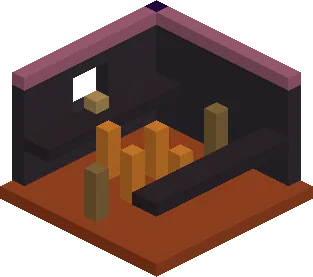
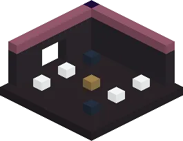
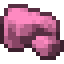
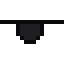
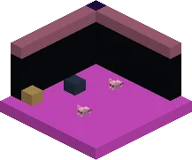

Zwart-rode buizen, Mika-spawners en Grote Mika met twee schatkisten
Challenging guh caves: dungeon hallUitdagende guhgrotten: kerkerhaluncommon, very deep (y5)niet vaak, heel diep (y5)
The hostile version of the guh caves: black and red glass tubes leading to a dark hall with Mika spawners, a ring of magma — and Big Mika guarding two treasure chests (vads, diamonds, compasses, enchanted books).De vijandige versie van de guhgrotten: zwarte en rode glazen buizen naar een donkere hal met Mika-spawners, een ring van magma — en Grote Mika die twee schatkisten bewaakt (vads, diamanten, kompassen, betoverde boeken).

Challenging guh caves: parkour roomUitdagende guhgrotten: parkourkamerin challenging cavesin uitdagende grotten
Jump across kaasknabbel pillars over a magma floor to reach the chest. Fall in and climb out by the ladders.Spring over kaasknabbelzuilen boven een magmavloer naar de kist. Val je erin, klim dan via de ladders eruit.

Challenging guh caves: spawner roomUitdagende guhgrotten: spawnerkamerin challenging cavesin uitdagende grotten
A zombie and a skeleton spawner, cobwebs and a loot chest. There's also a Mika den with its own Mika spawner.Een zombie- en een skeletspawner, spinnenwebben en een buitkist. Er is ook een Mika-hol met een eigen Mika-spawner.
LootBuit
| ItemVoorwerp | CountAantal | ChanceKans |
|---|---|---|
 Vahoege vads | 2–6 | oftenvaak |
| 1–8 | sometimessoms | |
| 2–8 | sometimessoms | |
| 1–3 | sometimessoms | |
| 1–3 | sometimessoms | |
| 1 | sometimessoms | |
| 1 | sometimessoms | |
| Gouden appel | 1 | sometimessoms |
| 1 | rarelyzelden | |
| 1 | rarelyzelden | |
| Enchanted golden apple | 1 | rarelyzelden |
| 1 | oftenvaak | |
| 1 | oftenvaak | |
| 1 | oftenvaak | |
 Piratenooglapje | 1 | oftenvaak |
| 6–12 | oftenvaak | |
| 3–6 | oftenvaak |
PicturesPlaatjes
